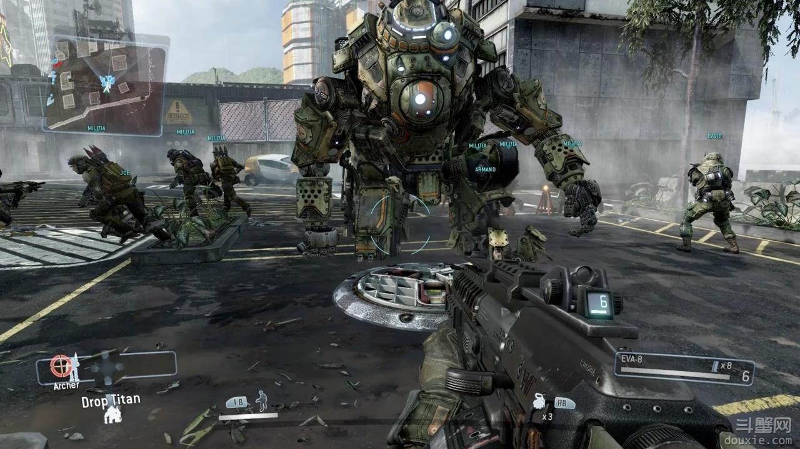
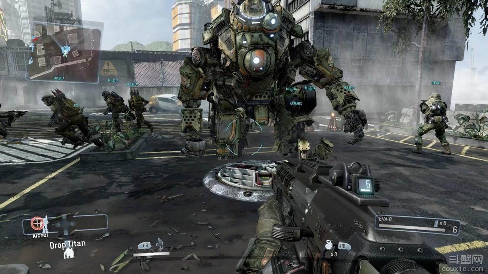
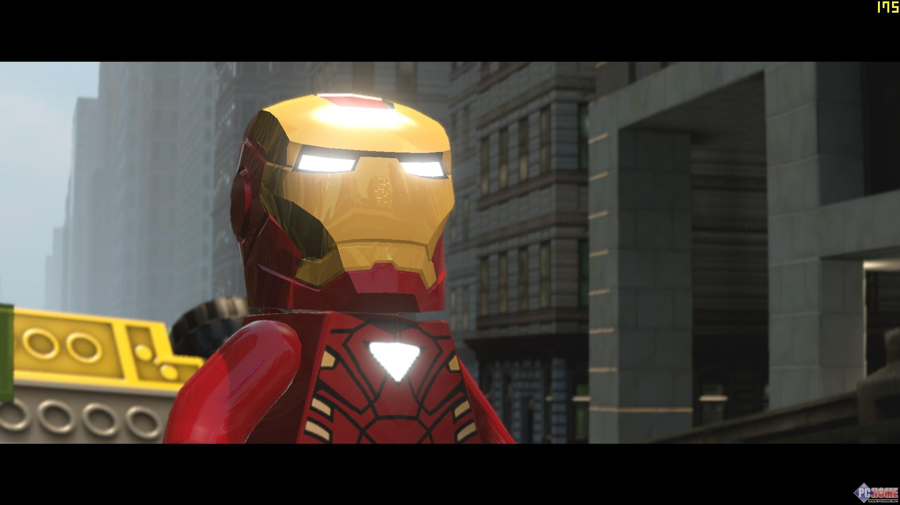
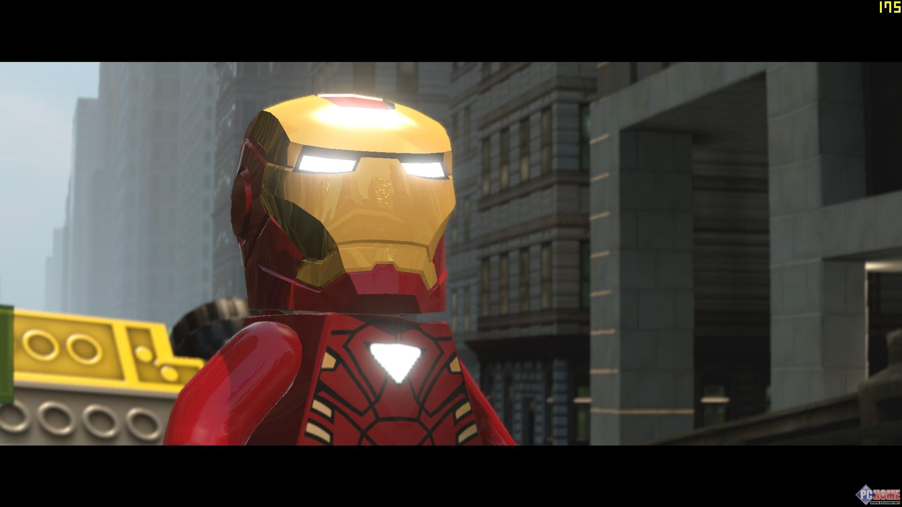

Hardware specification
Just XBOX ONE
- processor AMD APU
- Audio features Dolby 5.1ch Dolby 7.1ch
- CPU 8 core X86~0.1T/s floating point computing capability
- GPU 1.3T/s floating-point capability 32MB ESRAM support DX12
- Shared memory DDR3 8GB
- Hard disk capacity 500GB /1000GB
Xbox one is a player to give full range of entertainment experience super models. The game control mode of Microsoft full range of super real sense is not mature, but, even so, some already very realistic game has experienced over the machine. The following are all new start Xbox One players should not miss the 5 super classic game.
- Titanfall #1
- Forza Motorsport 5 #2
- FIFA 14 #3
- LEGO Marvel Super Heroes #4
- Dead Rising 3 #5
As a representative of Xbox One, "Titan" is definitely a must play the classic game. Why? Is very simple, as the iron man's natural mechanical control, won't this everywhere during the game super mechanical texture, the destruction of all things's absolute power? Moreover, the game itself has the multiplayer game system, the most advanced, buddies will not grab machine!The story takes place in the future, through generations of human exploration, human Has mastered the technology of superposition of time and space, touched and lived into the distant deep space. This vast area of known and unknown stellar systems is known as the "frontier" ". Most people will never go away from this "normal civilization" of the region, but for pioneers, travelers, explorers, mercenaries and criminals, in addition to the risk of "border" also means "opportunity".
Camp, called "faction" in the game, are IMC and the rebel army (The Militia). IMC, called Corporation Manufacturing Co., Ltd. (The Interstellar Manufacturing), as a small natural resources mining industrial enterprises started when known as "Hammond technology" (Hammond Engineering). In the face of the growing demand, coupled with the star market survey and map database technology patents, "Hammond technology" accumulated huge wealth, and set up a later brutal business empire, IMC in the merger a century enterprise. Control of valuable channels and efficient collection of resources, IMC all the time in the pursuit of profit maximization, sometimes unscrupulous. The rebel army, a loose coalition of "border mutual defence agreements", consists of farmers, pirates, mercenaries and outlaws who colonize overseas colonies. They are divided into different "brigades" responsible for different planetary defense, although some brigade size of less than pirate forces, but the rebels have strong resources so that they become the biggest barrier in the IMC border expansion ambitions.
 


In Forza Motorsport 5 "Forza 5" which also includes more than fifty from the home depot, a total of more than two hundred of the classic and modern cars, which listed in Taiwan's game of the Year Edition (Raceing Game Of The Year), also comes with a seventeen "by car experts the next generation of Top Gear" strict track selected, and ten models available for download additional vehicles selected out seventeen next-generation track vehicles and ten models available for additional download. The most expensive 600 yuan vehicles in the game, game player who can spend a money "buy game Token" (chips or tokens), the consumer can buy chips or vehicles can improve the winning experience gained over a period of time. There are many kinds of chip sales, basically follow the principle to buy more to send, 100, 575, 1250, 2700, 8000, 20000 and 6 kinds of packaged, priced at 0.79 euros, 3.99 euros, 7.99 euros, 15.99 euros, 39.99 euros and 64.99 euros.
Want to buy a new Xbox One bright blind buddy's eye, then immediately "5" ultimate racing car model! It perfect, you can feel personally on the scene of the driving experience. And the game itself has the intelligence qualities of the next era game: Xbox One cloud system can collect players' game data. In addition, a wealth of personalized options can give any kind of extraordinary enjoyment of the game experience.

FIFA14 is a football game, this is the series of fourteenth works also with "football" competition action game, this series of works of each generation will see significant improvements, this generation is no exception of the game not only in the most intuitive picture was improved and in other ways there are a lot of progress. A picture of the game to strengthen the role of the audience and the use of the quality data management system of the latest to make the game more intelligent, this generation of works from the real one step further, embodied in the first game player shot point, game player using the distance angle will directly affect the course of the ball, the player is again the ball control ability become stronger and will make a very clever pass cheat game player eyes while also optimizing the long pass, also strengthen the computer game judgment is not the so-called block or run or phenomenon, if the game player is football fans can not miss it.
FIFA fans' welfare comes! Xbox One has drastically improved the latest version of FIFA 14. The football player's face more clearly, the audience stands more realistic, a new default view will allow people to become more easily, all of this are not all the FIFA fans yearn day and night compared with PS3 and Xbox360! Version of FIFA, Xbox One FIFA has a qualitative leap. It seems that FIFA's reign will continue.


"Lego Marvel superhero" tells Nick, assembled superheroes, including iron man, Hulk, Thor, spider man, Wolverine and the other from the Marvel Universe characters, such as rocky planets, the Devourer, game player can choose to play the role of your love. "Lego Marvel hero" is the beginning of the Silver Surfer out on patrol, but for some mysterious reason, his flying skateboard into space debris, the lodge and other villains looking for targets. While playing game player heroes need to find these fragments in the villain before, let this simple patrol don't appear larger.
Lego game Super entertainment experience, in fact, already fame outside. But today say, is the classic "Lego Marvel superhero" from Marvel! Comic series more than and 100 super characters will appear, whether it is like Wolverine's super hero, or the Fantastic Four. This classic role will appear. The addition of these superheroes will make this game a whole game family pride.
 


The game tells the story of the outbreak, the protagonist Nick Ramos want to escape the tunnel and save the city infected by the epidemic story. Game set in fictional city "Los Perdidos", prototype for California, Losangeles. The game is set Dead Rising 2 after 10 years in California City, Lopez at seven fourteen on March 23rd, Tito, received the first cases of zombie infection cases. In a few hours after the rapid spread of the whole city Tito lopez. 72 hours after the outbreak of the tunnel exit, the protagonist of the game Nick Ramos climbed the bridge before the Lopez Tito, this is a place to leave.
"Dead rising 3" of this series will be raised to a new level! Yes, you're not wrong, this is the belt roller gear, or we can call him a zombie Terminator! And sexy toy rocket, hi, Mr. HIGH a zombie, think? In the game 3 times in the 2 generation zombie quantity, open game world, more can be made to eliminate dead artifact game player surprises.